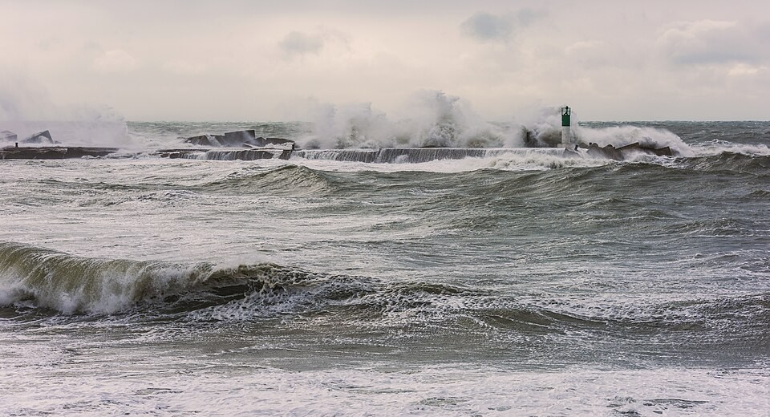

Lo que viaja es la forma, no el agua: dispersión, órbitas y velocidades
Tirá una piedra a un estanque: aparecen anillos que se alejan del punto del impacto. Parece que el agua viajara hacia afuera, pero una hoja que flota apenas sube y baja en el mismo lugar. Lo que viaja no es el agua, sino la forma. Eso es una onda, y en los fluidos hay ondas de muchos tipos: las olas del mar, las ondulaciones capilares, los tsunamis, las ondas que viajan dentro del océano.

En las olas de la superficie del agua, la fuerza que devuelve el agua a su lugar es la gravedad: si una parte de la superficie sube, su peso la hace bajar, y se pasa de largo, como un péndulo. David Tong, de la Universidad de Cambridge, las llama simplemente ondas de gravedad: ondas en fluidos en las que la fuerza restauradora es la gravedad [1]. Resolviendo el flujo debajo de la superficie, Tong obtiene la relación entre la frecuencia y la longitud de onda, la relación de dispersión [1]:
Tong destaca lo importante: para muchas ondas, como el sonido o la luz, la velocidad no depende de la longitud de onda; para las olas, sí [1].
La fórmula tiene dos límites útiles [1]:
Como en aguas profundas las olas de distinta longitud viajan a distinta velocidad, un grupo de olas se dispersa [1]. Tong distingue entonces la velocidad de cada cresta, la velocidad de fase, de la velocidad del grupo, que es la que transporta la energía; para olas en aguas profundas, la velocidad de grupo es la mitad de la de fase [1].
La ola de la cancha: en una cancha, el público hace «la ola»: cada persona se para y se sienta en su lugar, pero la ola recorre todo el estadio. Nadie se movió de su asiento. Las olas del agua son igual: cada porción de agua da vueltas en su lugar y lo que avanza es la forma.
Tong sigue el movimiento de una partícula de agua al paso de una ola: recorre una elipse, aplastada en la vertical; en aguas profundas, las elipses se vuelven círculos [1]. Los círculos se achican rápidamente al bajar: su tamaño cae exponencialmente con la profundidad [1]. Por eso, unos metros abajo, el agua casi no se mueve aunque arriba haya olas (un razonamiento a partir de ese resultado). Y hay un detalle fino: las órbitas no se cierran del todo, y cada partícula avanza un poquito en la dirección de la ola en cada vuelta. Es la deriva de Stokes [1].
Para ondulaciones muy cortas, la fuerza que manda no es la gravedad sino la tensión superficial. Tong las llama ondas capilares: pequeñas ondulaciones del agua, de hasta alrededor de un centímetro de longitud de onda [1]. Son las que aparecen cuando sopla una brisa sobre un charco, y según Tong son también las únicas que puede producir el viento a través de la inestabilidad de Kelvin-Helmholtz [1].
Ondas por dentro: las olas no son las únicas ondas de gravedad. Si el agua o el aire son más densos abajo que arriba, una porción de fluido desplazada oscila con una frecuencia propia, la frecuencia de flotación, y aparecen ondas que viajan por el interior del fluido [1]. Se cuentan en ondas internas.
Las olas son ondas de gravedad: la gravedad devuelve la superficie a su lugar y la forma viaja, aunque cada gota de agua solo da vueltas. Su velocidad depende de la longitud de onda y de la profundidad: en aguas profundas las olas largas van más rápido, y en aguas someras todas van a √(gH). Con eso se entienden las rompientes de la playa, las estelas de los barcos y los tsunamis.
Pregunta para la comunidad: Después de una tormenta lejana, a la playa llegan primero olas largas y espaciadas, y recién después olas más cortas. ¿Cómo lo explica la relación de dispersión en aguas profundas?